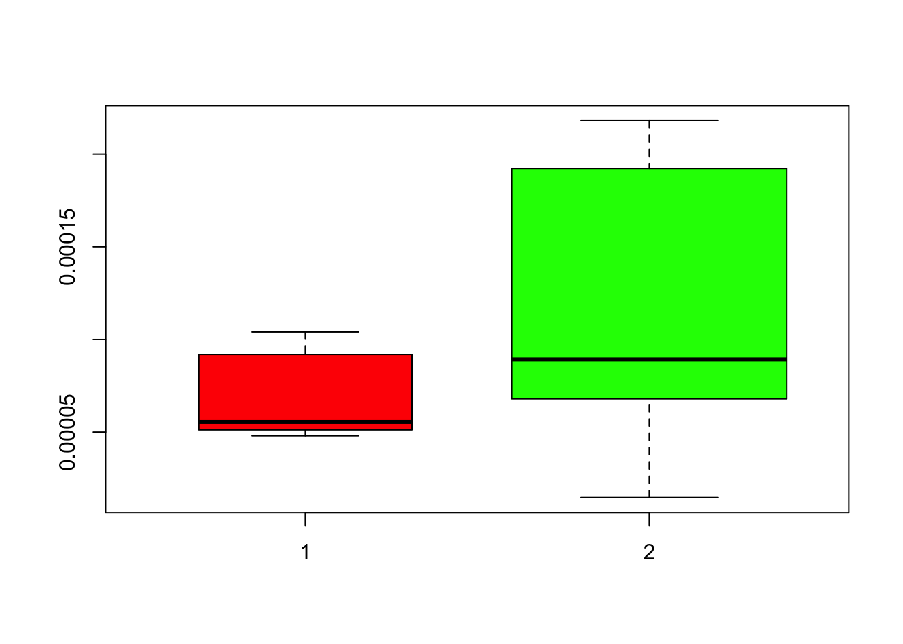
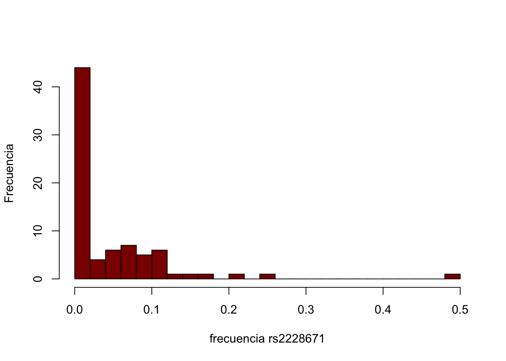
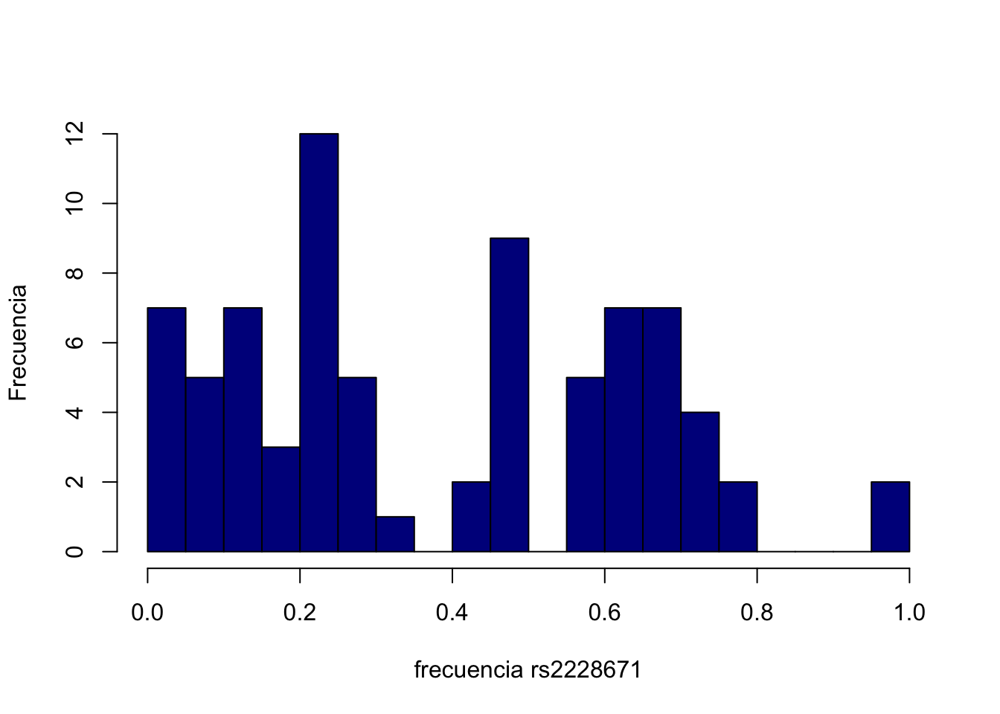

Capítulo 2 Epidemiología Genética
En el capítulo anterior vimos algunos conceptos básicos de genética de poblaciones aplicados a poblaciones humanas. En el presente capítulo vamos a intentar comenzar a aproximarnos a algunos (pocos), conceptos de epidemiología genética. De nuevo, el capítulo no tiene ninguna pretensión de ser exhaustivo y el orden de los conceptos manejados es totalmente arbitrario.
2.1 La estimación de frecuencias y el equilibrio (o no)
En una población con un gran número de individuos, tendiendo a
infinito, si la población se encuentra en equilibrio de Hardy-Weinberg
el número de individuos de los distintos genotipos coincidirá
estrechamente con las esperanzas de los mismos a partir las frecuencias
de los alelos. Es decir, la variación estocástica en cada uno de los
apareamientos (o en la unión de los gametos) tiende a cancelarse cuando
consideramos el gran número de individuos en la población. Sin embargo,
aún en esas grandes poblaciones no solemos tener acceso a la información
de todos los individuos y sí, solamente, a la información de una
muestra aleatoria de la misma. El concepto de muestra aleatoria es
fundamental ya que será el que nos permitirá extender nuestras
conclusiones de la muestra hacia la población, que en última instancia
suele ser lo que nos interesa. Al trabajar con una muestra aleatoria
relativamente reducida de la población, los números ahora serán mucho
menores y por lo tanto los efectos del azar se verán incrementados.
Supongamos, para ver el impacto del tamaño de la muestra, que tenemos
interés en estimar las frecuencias de los dos alelos en un locus
autosomal de una especie diploide en una población determinada. Como se
trata de una especie salvaje, difícil de capturar para muestrear, nos
contentamos con los 5 individuos que pudimos genotipar para este locus;
sin duda es mucho mejor que no tener nada. Como se trata de una especie
diploide, si tenemos \(n\) individuos vamos a tener \(2n\) alelos
genotipados, es decir, en nuestro caso un total de 10 alelos
genotipados. Supongamos ahora que de esos 10 alelos genotipados, 3
fueron del alelo \(A_1\) y 7 del alelo \(A_2\). Es decir, la proporción de
\(A_1\) es igual a \(p=3/10=0,3\), mientras que la del alelo \(A_2\) es de
\(q=7/10=0,7\) (hubiésemos llegado también a este resultado como \(q=1-p\)).
Parece razonable usar este valor de \(p\) como un estimador del
“verdadero valor”5 del parámetro en la población, en este caso la
frecuencia del alelo \(A_1\), tanto que coincide con el estimador por
máxima verosimilitud (es decir, escogemos como valor estimado aquel que tiene mayor probabilidad de ocurrir de acuerdo a lo que hemos observado).
Ahora, ¿que certeza tenemos que este valor que estimamos esté cerca del “verdadero valor”? En principio, como solo tenemos 10 alelos genotipados, nuestras estimaciones irán de 10% en 10% (los saltos en la cuenta de alelos son de a 1, pero en 10 total, así que tenemos \(\frac{1}{10}=0,1=10\%\)). O sea, la precisión de nuestra estimación es realmente baja.
Figura 2.1: Probabilidad de observar un conteo de alelos determinado en una muestra de 5 individuos (a) y en una muestra de 50 individuos (b), dado que la frecuencia del mismo en la población es de 0,5.
Otra forma de ver este problema es pensar en cuál sería la probabilidad de observar este conteo de alelos \(A_1\), por ejemplo, dado que conocemos el verdadero valor del parámetro. Si suponemos que los individuos representan un muestreo al azar de los gametos en la población y que los individuos de la muestra fueron seleccionados al azar, entonces la probabilidad de observar un conteo \(x\) en particular, dado el número total de alelos genotipados \(n\), se puede describir por la distribución binomial (en nuestro caso de dos alelos): \[\begin{equation} f(x)={n\choose x} p^x (1-p)^{n-x} \tag{2.1} \end{equation}\]
con las combinaciones de \(n\) elementos tomados de a \(x\) elementos iguales a:
\[\begin{equation} {n\choose x}=\frac{n!}{x!(n-x)!} \end{equation}\]
Por ejemplo, si la frecuencia “real” en la población entera para el alelo \(A_1\) es de
\(p=0,5\), ¿cuál sería la probabilidad de observar este conteo de 3
alelos en los 10 que genotipamos? De acuerdo a la ecuación
(2.1), la
probabilidad de obtener 3 conteos en una muestra de 10, con una
probabilidad \(p=0,5\) en la población es de:
\[\begin{equation}
f(3)={10\choose 3} (0,5)^3 (1-0,5)^{10-3}=\frac{10!}{7! 3!} (0,5)^3 (0,5)^{7}=\frac{10*9*8}{6} (0,5)^{10}=0,1171875 \sim 11,7\%.
\end{equation}\]
Es decir, aún cuando la frecuencia real en la población es de \(p=0,5\),
en más de 1 de cada 10 muestras que tomemos, solo por azar, observaremos
un conteo de 3 alelos. Esto puede parecer poco, pero si nos fijamos en
la figura 2.1(a), donde graficamos la probabilidad de
observar cada uno de los 11 conteos posibles (de 0 a 10 alelos \(A_1\)),
resulta claro que la probabilidad de no acertar en el único número
correcto (5 alelos), es realmente alta. De hecho, si calculamos la
probabilidad de observar exactamente 5 alelos en 10, dada la frecuencia
real de \(p=0,5\), esta probabilidad es igual a \(0,2460938\), por lo que la
probabilidad de obtener el “verdadero” valor de \(p\) en una muestra de
este tamaño es igual a \(1-0,2460938=0,7539062 \sim 75,4\%\). Por otro
lado, la probabilidad de tener un estimado de \(p \leq 0,3\) es la suma de
las probabilidades de obtener 0, 1, 2 o 3 conteos y esto es igual a
\(0,171875 \sim 17,2\%\) (el lector lo puede verificar fácilmente).
Claramente, de lo anterior surge que este tamaño muestral de 5
individuos no nos conducirá a nada muy razonable. ¿Qué ocurriría si
conseguimos aumentar el tamaño muestral a 50 individuos? Las
probabilidades esperadas de los distintos conteos en la muestra
aleatoria se grafican en la figura
2.1(b). Ahora resulta claro que, por un lado,
la “granularidad” de las barras es mucho más fina, es decir que la
“precisión” de nuestros estimados podría ser mucho mayor y por el otro,
que las estimaciones muy alejadas del “verdadero valor” son bastante
improbables. Por ejemplo, ¿cuál sería la probabilidad de tener un
estimado de \(p \leq 0,3\)? En este caso se trata de la suma de las
probabilidades de todos los conteos, de 0 a 30 (\(30/100=0,3\)). En decir,
se trata de la función de distribución (a veces conocida como
probabilidad acumulada, o también CDF en inglés), que en este caso de la
binomial, para un valor \(k\) (30 en nuestro caso), sería
\[\begin{equation}
Pr(X \leq k)=\sum_{x=0}^{k} {n\choose x} p^x (1-p)^{n-x}
\tag{2.2}
\end{equation}\]
Sería algo tedioso calcularlo a mano, pero una primer idea del valor se puede tener observando la figura 2.1(b), donde resulta claro que las probabilidades para conteos de hasta 30, son despreciables. De hecho, utilizando la función de distribución en cualquier software que la tenga implementada, la probabilidad de observar un conteo de 30 o menos alelos en 100 genotipados es de 3,92507x10-5 (\(\sim 0,004\%\)) si la frecuencia del alelo \(A_1\) en la población es \(p=0,5\); o sea, prácticamente improbable. Si bien ahora también bajó la probabilidad de acertar exactamente en un estimado de \(p=0,5\) (\(Pr(x=50)=0,07958924 \sim 8\%\)), si aceptamos por comparación con la muestra de 5 individuos donde la probabilidad de observar exactamente 5 alelos (probabilidades entre \(0,45\) y \(0,55\)) era de \(\sim 24,6\%\), ahora la posibilidad de observar entre 45 y 54 alelos (un intervalo de frecuencias equivalente), ahora con 50 individuos, concentra \(\sim 63\%\) de la probabilidad. O dicho de otra manera, con una probabilidad similar a la de la muestra de 5 individuos, ahora los resultados se concentrarán (aproximadamente) entre 49 y 52 alelos. Claramente, nuestras estimaciones se vuelven mucho más precisas y útiles.
Hasta acá, hicimos nuestras estimaciones de las frecuencias alélicas poblacionales (y por lo tanto la posibilidad de conocer nuestras expectativas para el equilibrio de Hardy-Weinberg) de una manera bastante sencilla ya que asumimos que, genómica mediante, podemos acceder al verdadero estado alélico (ADN, por ejemplo) de cada una de las muestras. Sin embargo, en muchos casos esto no es posible (porque, por ejemplo, no se conoce la base molecular de diferencias fenotípicas) o resulta impráctico y la única información disponible es la fenotípica. Es decir, ahora solo contamos con el conteo de los distintos fenotipos. Esto introduce un nuevo factor en el problema: es necesario conocer el modelo de herencia (mendeliana, codominancia, etc.) para poder pasar de los fenotipos a los genotipos y de allí a las frecuencias de los alelos.
Supongamos, para comenzar que el modelo de herencia es de codominancia en un locus autosomal con dos alelos (\(A_1\) y \(A_2\) en una especie diploide, es decir, ambos alelos se expresan en el fenotipo y hay una correspondencia biunívoca entre fenotipo y genotipo. En este caso, con dos alelos tenemos tres genotipos (que son identificables directamente), por lo que, en una muestra de \(n\) individuos la frecuencia relativa (muestral) del alelo \(A_1\) será igual a la suma de 2 veces el número de homocigotas \(A_1\) más el número de heterocigotas, todo dividido entre 2 veces el número de individuos: \[\begin{equation} \begin{split} p=\frac{2n_{A_1A_1}+n_{A_1A_2}}{2n}, q=\frac{2n_{A_2A_2}+n_{A_1A_2}}{2n}\\ n=n_{A_1A_1}+n_{A_1A_2}+n_{A_2A_2} \end{split} \end{equation}\] En todo caso, si conocemos los genotipos a nivel molecular (ver Ejemplo 2.1) la forma de resolverlo es análoga a si los genotipos se pueden “mapear” en forma biunívoca con los fenotipos (el fenotipo sería ahora igual al genotipo). Tanto si se trata de codominancia como de dominancia parcial, lo relevante aquí es la posibilidad de distinguir los heterocigotos de ambos homocigotos, lo que nos permite simplemente hacer el “conteo” de alelos, ya que la base genética es clara (en diploides, los homocigotos poseen dos alelos del mismo tipo y los heterocigotos poseen uno de cada tipo).
Las cosas empiezan a complicarse un poco más cuando aparece el efecto de dominancia. Supongamos, por ejemplo, que en el locus anterior (autosomal
en especie diploide, con dos alelos), el alelo \(A_1\) domina
completamente al \(A_2\), es decir, tanto el \(A_1A_1\) como el \(A_1A_2\)
tendrán idéntico fenotipo, mientras que el \(A_2A_2\) tendrá un fenotipo
diferente. Ahora el “conteo” de alelos en los fenotipos no alcanza para
determinar las frecuencias de los dos alelos ya que los conteos del
fenotipo \(A_1\) corresponde al de dos genotipos (\(G_{11}=A_1A_1\) y
\(G_{12}=A_1A_2\)), ambos con diferentes números de alelos \(A_1\) y \(A_2\)
(2 y 0 para el homocigoto, 1 y 1 para el heterocigoto). Dicho de otra
forma, sabemos calcular las frecuencias alélicas a partir de los 3
genotipos, pero solo tenemos dos fenotipos (el del alelo dominante y el
del alelo recesivo). De hecho, con solo esta información se trata de un
problema indeterminado y para poder salir de esta situación debemos
agregar algún tipo de información adicional. Una alternativa sencilla
(suponiendo que no podemos conocer los genotipos, lo que resolvería
todo) es asumir que la población se encuentra en equilibrio de Hardy-Weinberg, lo que establece una relación explícita entre frecuencias alélicas (lo desconocido) y genotipos. Es decir, si la
población se encuentra en equilibrio de Hardy-Weinberg sabemos que la
esperanza del número de individuos (homocigotos) \(A_2A_2\), la única
clase de genotipo que en nuestro caso “mapea” a un solo fenotipo, es
igual a \(nq^2\), con \(n=G_{1}.+G_{22}\) y \(G_{1}.=G_{11}+G_{12}\) el número
de individuos con el fenotipo dominante. Esto nos deja con la
posibilidad de despejar \(q\),
\[\begin{equation}
G_{22}=nq^2 \therefore q=\pm \sqrt{\frac{G_{22}}{n}}=\pm \sqrt{\frac{G_{22}}{G_1.+G_{22}}}
\tag{2.3}
\end{equation}\]
Es decir, de las dos raíces que tiene esta ecuación, una positiva y otra
negativa, nuestra solución será la positiva, ya que no existen
frecuencias negativas y por lo tanto no se trata de una solución válida.
Es importante recalcar en este punto que la validez de nuestra
estimación depende de que la población se encuentre en equilibrio de
Hardy-Weinberg, pues de lo contrario no será una estimación que tenga
alguna base teórica.
Ejemplo 2.1
La fenilcetonuria (PKU) es un error innato del metabolismo que resulta en una disminución del metabolismo del aminoácido fenilalanina como resultado de una deficiencia en la enzima fenilalanina hidroxilasa. El resultado de esto es la acumulación de fenilalanina a niveles potencialmente tóxicos. Desde el punto de vista del modelo de herencia se comporta como autosómica recesiva, por lo que es necesario heredar dos copias “defectuosas” del gen PAH (a decir verdad, que tengan actividad seriamente disminuída) para que la enfermedad se manifieste. La incidencia es muy variable de población en población, pero dos casos extremos podrían ser la población de Finlandia, con 1 afectado en 200 mil nacimientos y la población de Turquía, con 1 afectado en 2600 nacimientos.
Calcular para ambas poblaciones la frecuencia de “el” 6 alelo defectuoso, así como la proporción de portadores (que no manifiestan la enfermedad), asumiendo que las poblaciones se encuentran en equilibrio de Hardy-Weinberg.
Solución:
Utilizando la ecuación (2.3), tenemos para los dos casos \[\begin{equation} \begin{split} q_{Fin}=\sqrt{\frac{1}{200000}}=0,002236068 \sim 0,22\% \\ q_{Tur}=\sqrt{\frac{1}{2600}}=0,01961161 \sim 1,96\% \end{split} \end{equation}\] Los portadores serán los heterocigotos, por lo que, si asumimos que las poblaciones se encuentran en equilibrio de Hardy-Weinberg, entonces tendremos \[\begin{equation} \begin{split} Het_{Fin}=2p_{Fin}q_{Fin}=2*(1-0,002236068)*0,002236068=0,004462136\sim 0,45\% \\ Het_{Tur}=2p_{Tur}q_{Tur}=2*(1-0,01961161)*0,01961161=0,038454 \sim 3,85\% \end{split} \end{equation}\]
En un estudio de metanálisis se identificaron diferentes estudios previos con información de la prevalencia de PKU para diferentes poblaciones del Mediterráneo oriental y panamercianas. Las prevalencias observadas fueron las siguientes: \(21.8,15.97,10.39,6.79,19.78,7.48,4.18,6.83,1.47,19.22\) casos por 100.000 nacidos para las mediterráneas, mientras que fue de \(10.40,5.12,5.82,5.28,4.80,9.20\) para las panamericanas. Vamos a estimar la frecuencia del alelo defectuoso en las diferentes poblaciones, pero ahora usando R.
prevalenciasM<-c(21.8,15.97,10.39,6.79,19.78,7.48,4.18,6.83,1.47,19.22)/1e5
(freqrecesivoM<-sqrt(prevalenciasM))## [1] 0.014764823 0.012637247 0.010193135 0.008240146 0.014064139 0.008648699
## [7] 0.006465292 0.008264381 0.003834058 0.013863621prevalenciasA<-c(10.40,5.12,5.82,5.28,4.80,9.20)/1e5
(freqrecesivoA<-sqrt(prevalenciasA))## [1] 0.010198039 0.007155418 0.007628892 0.007266361 0.006928203 0.009591663¿Existen diferencias significativas entre estas poblaciones?
boxplot(prevalenciasA,prevalenciasM,col=c("red","green"),varwidth=TRUE)
(midf<-data.frame("prevalencia"=c(prevalenciasA,prevalenciasM),"poblacion"=c(rep("A",length(prevalenciasA)),rep("M",length(prevalenciasM)))))## prevalencia poblacion
## 1 0.0001040 A
## 2 0.0000512 A
## 3 0.0000582 A
## 4 0.0000528 A
## 5 0.0000480 A
## 6 0.0000920 A
## 7 0.0002180 M
## 8 0.0001597 M
## 9 0.0001039 M
## 10 0.0000679 M
## 11 0.0001978 M
## 12 0.0000748 M
## 13 0.0000418 M
## 14 0.0000683 M
## 15 0.0000147 M
## 16 0.0001922 Mkruskal.test(prevalencia~poblacion,data=midf)##
## Kruskal-Wallis rank sum test
##
## data: prevalencia by poblacion
## Kruskal-Wallis chi-squared = 1.4235, df = 1, p-value = 0.2328De acuerdo al gráfico, las diferencias parecen bastante notorias (menor prevalencia para las americanas), pero sin embargo, la misma no es estadísticamente significativa.
Ejercicio 2.1
En general, si bien en muchas enfermedades humanas y animales que se clasifican como de herencia mendeliana se considera que se trata de un solo alelo recesivo, a nivel molecular suelen co-existir varios alelos deletéreos que producen similar fenotipo. Demostrar que si en un locus existen dos alelos deletéreos recesivos respecto al alelo normal, bajo equilibrio de Hardy-Weinberg los resultados respecto al número de portadores y de enfermos son equivalentes a considerarlos como un solo alelo defectuoso.
Solución Supongamos que llamamos \(A_1\) al alelo normal y \(A_2\) y \(A_3\) a los alelos defectuosos, con frecuencias respectivas \(p\), \(q\) y \(r\), \(p+q+r=1\). Llamemos \(u=q+r\) a la frecuencia de los dos alelos defectuosos sumados, o lo que es lo mismo, a la frecuencia de alelos defectuosos (como si fuera uno solo). De acuerdo a lo visto para más de un alelo, las frecuencias esperadas bajo equilibrio Hardy-Weinberg serán \[\begin{aligned} (p+q+r)^2=p^2+q^2+r^2+2pq+2pr+2qr\end{aligned}\] De estos genotipos, los enfermos serán aquellos que tengan 2 alelos defectuosos, sean cuales sean, o sea \(A_2A_2\), \(A_3A_3\) y \(A_2A3\), es decir \[\begin{aligned} q^2+r^2+2qr=(q+r)^2=u^2\end{aligned}\] Es decir, demostramos que el número de enfermos esperados es equivalente a considerarlo como un solo alelo. Ahora, el número de portadores será la suma de los genotipos que tienen un solo alelo defectuoso y el otro normal, o sea \(A_1A_2\) y \(A_1A_3\), es decir \[\begin{aligned} 2pq+2pr=2p(q+r)=2pu,\end{aligned}\] con lo que queda demostrado que también la frecuencia de portadores es equivalente a considerarlo un solo alelo defectuoso.
Ejemplo 2.2
En una enfermedad con base genética de carácter recesivo fueron identificados 5 variantes (alelos) que son disruptivas a nivel de la proteína codificada. Las frecuencias de estas 5 variantes fueron las siguientes: \(D^-_1=0.030, D^-_2=0.017, D^-_3=0.041,D^-_4=0.001,D^-_5=0.011\). Calcular la proporción de enfermos esperada de acuerdo al equilibrio de Hardy-Weinberg.
De acuerdo a lo que vimos previamente, alcanza con sumar las frecuencias de todos los alelos deletéreos recesivos y luego calcular el cuadrado de este número, es decir:
fdel<-c(0.030, 0.017, 0.041,0.001,0.011)
names(fdel)<-paste("D",1:5,sep="")
sum(fdel)## [1] 0.1sum(fdel)^2## [1] 0.01La otra forma, es calcular la proporción esperada de cada genotipo recesivo (es decir, la combinación de un alelo recesivo por parte de padre con uno recesivo de parte de madre) y sumar todos los resultados:
matprop<-fdel%*%t(fdel)
rownames(matprop)<-names(fdel)
matprop## D1 D2 D3 D4 D5
## D1 0.00090 0.000510 0.001230 3.0e-05 0.000330
## D2 0.00051 0.000289 0.000697 1.7e-05 0.000187
## D3 0.00123 0.000697 0.001681 4.1e-05 0.000451
## D4 0.00003 0.000017 0.000041 1.0e-06 0.000011
## D5 0.00033 0.000187 0.000451 1.1e-05 0.000121sum(matprop)## [1] 0.01que, obviamente, nos da el mismo resultado. Sin embargo, si las distintas combinaciones de alelos presentan diferente severidad, puede ser importante conocer las frecuencias esperadas de cada tipo de combinación. En este sentido, es muy fácil de obtener este resultado ya que lo único que tenemos que hacer es multiplicar por 2 las proporciones de los heterocigotos (porque hay dos combinaciones de alelo padre y alelo madre que producen el mismo genotipo), mientras que las frecuencias de los homocigotos (diagonla de la matriz) es la que ya aparece ahí. Una forma de hacer esto es la siguiente:
upper.tri(matprop)*matprop+upper.tri(matprop,diag=TRUE)*matprop## D1 D2 D3 D4 D5
## D1 9e-04 0.001020 0.002460 6.0e-05 0.000660
## D2 0e+00 0.000289 0.001394 3.4e-05 0.000374
## D3 0e+00 0.000000 0.001681 8.2e-05 0.000902
## D4 0e+00 0.000000 0.000000 1.0e-06 0.000022
## D5 0e+00 0.000000 0.000000 0.0e+00 0.000121sum(upper.tri(matprop)*matprop+upper.tri(matprop,diag=TRUE)*matprop)## [1] 0.012.2 El sistema ABO (introducción teórica)
En general la relación entre los distintos alelos de un locus suele ser más complicada, en principio porque existen más de dos alelos cuyo impacto en el fenotipo es distinguible, así como las relaciones entre los mismos, que muchas veces implican diferentes modos de herencia (por ejemplo, dominancia y codominancia en el mismo locus). Un ejemplo de esto es el sistema de grupos sanguíneos ABO, el más importante en humanos,7 cuya herencia (en forma simplificada) puede apreciarse en la figura 2.2.

Figura 2.2: Sistema de determinación sanguínea ABO. Los alelos A y B muestran codominancia entre sí, mientras que ambos son dominantes respecto al O. Figura de Dominio Público tomada de Wikipedia (“ABO system codominance.svg”).
Básicamente, mientras que tanto el alelo \(I^A\) como el \(I^B\) producen antígenos de superficie en los eritrocitos (glóbulos rojos de la sangre) , respectivamente A y B, y dominan al alelo \(i\) que no produce antígenos de superficie (O), la relación entre el \(I^A\) y el \(I^B\) es de codominancia, expresándose ambos antígenos en la superficie de los eritrocitos. En función de esto, tendremos desde el punto de vista fenotípico para los test de aglutinación (test inmunológico de rutina) cuatro fenotipos diferentes (supongamos que las frecuencias de \(I^A\), \(I^B\) e \(i\) son \(p\), \(q\) y \(r\) respectivamente):
A, formado por los homocigotos del alelo \(I^A\) , más los heterocigotos del alelo \(I^A\) y el alelo \(i\) (\(p^2+2pr\))
B, formado por los homocigotos del alelo \(I^B\) , más los heterocigotos del alelo \(I^B\) y el alelo \(i\) (\(q^2+2qr\))
AB, formado por los heterocigotos del alelo \(I^A\) y el alelo \(I^B\) (\(2pq\))
O, formado por los homocigotos del alelo \(i\) (\(r^2\))
Ahora, la estimación de las tres frecuencias a partir del conteo ya no
es tan sencillo como ahora. Por un lado tenemos 3 alelos en lugar de
dos, pero lo que realmente complica el panorama es la relación de
dominancia-codominancia entre alelos. De hecho, ya no hay un mapeo entre
los homocigotos y fenotipos particulares, lo que solo ocurre en el caso
del O.
2.3 La estimación de frecuencias en el locus ABO
Los métodos elaborados para la estimación de las frecuencias hacen uso del concepto de máxima verosimilitud, pero (Yasuda 1984) propuso un método sencillo basado en conteo. Supongamos que \(T=A+B+AB+O\), es decir el total de individuos de los distintos fenotipos. Trabajaremos con la determinación de \(p\), la frecuencia del alelo \(I^A\), pero para \(q\) (la frecuencia del \(I^B\)) la situación es idéntica por simetría y basta con sustituir A por B e \(I^A\) por \(I^B\). La frecuencia del alelo \(I^A\) será igual a la cantidad total de alelos \(I^A\) en los fenotipos que tienen este alelo, es decir A (\(I^AI^A\)) y AO (\(I^Ai\)) que solo expresan el A, más el AB (\(I^AI^B\)) que expresa los dos alelos, todo dividido entre \(2T\) que es el número total de alelos en los individuos. En el primer caso hay dos alelos \(I^A\) por cada individuo, mientras que en los otros dos hay solo un alelo por individuo. Sin embargo, nosotros no podemos distinguir los 3 fenotipos, ya que tanto el A como el AO solo expresan el alelo \(I^A\), por lo que debemos buscar una forma de separar el aporte de cada uno de estos genotipos al conteo. Mientras que el \(I^Ai\) aporta un alelo \(I^A\), el \(I^AI^A\) aporta dos alelos, por lo que todos los fenotipos A aportarán un alelo, mientras que una cierta fracción (los homocigotos) aportará un segundo alelo también. ¿Cuál es la fracción del fenotipo A que corresponde a los homocigotas \(I^AI^A\)? De acuerdo a lo predicho por el equilibrio de Hardy-Weinberg, los homocigotas \(I^AI^A\) serán \(p^2\), mientras que los heterocigotas \(I^Ai\) serán \(2pr\), por lo que la fracción de homocigotas \(h_A\) será
\[\begin{equation} h_A=\frac{p^2}{p^2+2pr}=\frac{p^2}{p(p+2r)}=\frac{p}{p+2r} \tag{2.4} \end{equation}\]
Es decir, si sumamos las contribuciones de AB, todos los A y el resto de los A homocigotos, tenemos
\[\begin{equation} p=\frac{[AB+A+Ah_A]}{2T} \tag{2.5} \end{equation}\]
Si definimos a partir de los fenotipos observables A y O, \(k_A=O/(A+O)\), entonces podemos expresar \(k_A\) en términos de lo esperable bajo equilibrio Hardy-Weinberg como
\[\begin{equation} k_A=\frac{Tr^2}{T(p^2+2pr)+Tr^2}= \frac{r^2}{p^2+2pr+r^2}=\frac{r^2}{(p+r)^2}=[r/(p+r)]^2\\ \therefore \sqrt{k_A}=\frac{r}{(p+r)} \tag{2.6} \end{equation}\]
¿Cuál es la relación entre \(h_A\) y \(k_A\)? Usando las definiciones de \(h_A\) (ecuación (2.4)) y \(k_A\) (ecuación (2.6)), tenemos que
\[\begin{equation} h_A=\frac{p}{p+2r}=\frac{p+r-r}{p+r+r}=\frac{\frac{p+r-r}{p+r}}{\frac{p+r+r}{p+r}}=\frac{\frac{p+r}{p+r}-\frac{r}{p+r}}{\frac{p+r}{p+r}+\frac{r}{p+r}}=\frac{1-\frac{r}{p+r}}{1+\frac{r}{p+r}}=\frac{1-\sqrt{k_A}}{1+\sqrt{k_A}}\\ h_A=\frac{1-\sqrt{k_A}}{1+\sqrt{k_A}}=\frac{(1-\sqrt{k_A})}{(1+\sqrt{k_A})} \frac{(1-\sqrt{k_A})}{(1-\sqrt{k_A})}=\frac{(1-\sqrt{k_A})^2}{1-k_A} \tag{2.7} \end{equation}\]
¡Excelente! Tenemos la relación entre \(h_A\) y \(k_A\) (expresada de dos formas), pero aún nos falta llegar a una forma de \(h_A\) que sea una función de cantidades observables, es decir los fenotipos. Si recordamos la definición de \(k_A\) a partir de los fenotipos observables (\(k_A=O/(A+O)\)) y sustituimos en la ecuación (2.7), tenemos
\[\begin{equation} h_A=\frac{(1-\sqrt{k_A})^2}{1-k_A} \Leftrightarrow h_A (1-k_A)=(1-\sqrt{k_A})^2 \Leftrightarrow h_A (1-\frac{O}{A+O})=1-2\sqrt{k_A}+k_A\\ h_A \frac{A+O-O}{A+O}=1-\sqrt{\frac{O}{A+O}}+\frac{O}{A+O} \Leftrightarrow h_A \frac{A}{A+O}=\\ =\frac{A+O}{A+O} \frac{\sqrt{A+O}\sqrt{O}}{\sqrt{A+O}\sqrt{A+O}}+\frac{O}{A+O}=\frac{(A+O)-2\sqrt{O(A+O)}+O}{A+O} \Leftrightarrow \\ Ah_A=A+O-2\sqrt{O(A+O)}+O \therefore Ah_A=A+2O-2\sqrt{O(A+O)} \end{equation}\]
Finalmente, si volvemos al principio con este resultado y sustituimos en (2.5), tenemos el estimador basado en conteo \[\begin{equation} \hat{p}=\frac{[AB+A+Ah_A]}{2T}=\frac{[AB+A+A+2O-2\sqrt{O(A+O)}]}{2T} \therefore \\ \hat{p}=\frac{[(1/2)AB+A+O-\sqrt{O(A+O)}]}{T} \end{equation}\]
Analogamente, por simetría, para la estimación de \(q\) tenemos
\[\begin{equation} \hat{q}=\frac{[(1/2)AB+B+O-\sqrt{O(B+O)}]}{T} \end{equation}\]
y por lo tanto, \(\hat{r}=1-\hat{p}-\hat{q}\). Sencillo, ¿no?
Ejemplo 2.3
Entre donantes de sangre de la ciudad de Ankara (Turquía) se determinó que de 1500 donantes sanos se observaron 669 del grupo A, 484 del grupo O, 232 del grupo B y 115 del grupo AB.
Utilizando los estimadores que propuso (Yasuda 1984) estimar las frecuencias de los alelos \(I^A\), \(I^B\) e \(i\), así como el número esperado de los distintos fenotipos si la población estuviese en equilibrio de Hardy-Weinberg.
Solución:
\[\begin{equation*} \hat{p}=\frac{[(1/2)AB+A+O-\sqrt{O(A+O)}]}{T}=\frac{((115/2)+669+484-\sqrt{(484(669+484))})}{1500}=0,3089808 \\ \hat{q}=\frac{[(1/2)AB+B+O-\sqrt{O(B+O)}]}{T}=\frac{((115/2)+232+484-\sqrt{(484(232+484))})}{1500}=0,1232134 \\ \hat{r}=1-\hat{p}-\hat{q}=1-0,3089808-0,1232134=0,5678058 \end{equation*}\]
De acuerdo a las frecuencias estimadas previamente, el número esperado de cada fenotipo sería
\[\begin{equation*} E(A)=(p^2+2pr)T=(0,3089808^2+2\cdot 0,3089808\cdot 0,5678058)\cdot 1500=669,527 \sim 670\\ E(B)=(q^2+2qr)T=(0,1232134^2+2\cdot 0,1232134\cdot 0,5678058)\cdot 1500=232,6562 \sim 233\\ E(AB)=2pqT=2\cdot 0,3089808\cdot 0,1232134\cdot 1500=114,2117 \sim 114 \\ E(O)=r^2T=0,5678058^2\cdot 1500=483,6051=484, \end{equation*}\]
lo que coincide estrechamente con los números observados, por lo que no podemos descartar que la población se encuentre en equilibrio Hardy-Weinberg (en general no podemos resolver a favor de una hipótesis alternativa basados en la estadística, a lo sumo podemos afirmar que la misma es completamente improbable dados los supuestos del test que aplicamos).
Ejercicio 2.2
Asumiendo que las poblaciones en las que se va a aplicar se encuentran en equilibrio de Hardy-Weinberg, desarrollar un estimador de las frecuencias de los tres alelos del grupo sanguíneo ABO (\(p\), \(q\) y \(r\)) basado en el conteo de los individuos O y AB (desambiguando \(p\) y \(q\) si fuese necesario a través de sus respectivos conteos). ¿Qué problema obvio tiene este estimador? A partir de las siguentes frecuencias genotípicas estimar las frecuencias alélicas y fenotípicas y comentarlas en relación a los datos observados: 669 del grupo A, 484 del grupo O, 232 del grupo B y 115 del grupo AB.
Solución Tanto el fenotipo O como el AB mapean cada uno a un solo genotipo, por lo que su conteo no implica suma de aportes de genotipos diferentes. Si asumimos equilibrio de Hardy-Weinberg y que \(T=A+B+O+AB\), \(p+q+r=1\), tenemos \[\begin{equation*} \begin{split} AB=2pqT \\ O=r^2T \Leftrightarrow r=\sqrt{\frac{O}{T}} \\ p+q+r=1 \Rightarrow p+q+\sqrt{\frac{O}{T}}=1 \Leftrightarrow \\ \end{split} \tag{2.8} \end{equation*}\]
\[\begin{equation*} \begin{split} \Leftrightarrow p=1-q-\sqrt{\frac{O}{T}} \end{split} \tag{2.9} \end{equation*}\]
Sustituyendo (2.9) en (2.8) para quedarnos con una sola variable (\(q\)), tenemos \[\begin{equation*} \begin{split} 2qT(1-q-\sqrt{\frac{O}{T}})=AB \Leftrightarrow 2q-2q^2-2q\sqrt{\frac{O}{T}}=\frac{AB}{T} \Leftrightarrow q^2+(\sqrt{\frac{O}{T}}-1)q+\frac{AB}{2T}=0 \\ \end{split} \end{equation*}\] Se trata de una ecuación de segundo grado, por lo que utilizando la fórmula clásica (atribuida al matemático indio Bhaskaracharya), tenemos que nuestro estimador de \(q\) es \[\begin{equation*} \hat{q}=\frac{(1-\sqrt{\frac{O}{T}}) \pm \sqrt{(\sqrt{\frac{O}{T}}-1)^2-\frac{2AB}{T}}}{2} \end{equation*}\] Es de notar que esto nos deja con dos soluciones, pero como con la información que utilizamos \(p\) y \(q\) no son identificables (si hubiésemos cambiado \(p\) por \(q\) el resultado sería idéntico), debemos usar la información de conteo de A y B para desambiguar las dos soluciones de nuestro estimador (la solución mayor correponde al conteo mayor entre A y B). El defecto obvio es que nuestro estimador no hace uso de toda la información disponible, una propiedad indeseable de los estimadores que discutiremos en otro capítulo.
Para determinar la frecuencia de \(r\) hacemos \(r=\sqrt{O/T}=\sqrt{484/1500}=0,5680376\), mientras que para las de \(p\) y \(q\) aplicamos la de nuestro estimador anterior \[\begin{equation} \begin{split} \hat{q}=\frac{(1-\sqrt{\frac{O}{T}}) \pm \sqrt{(\sqrt{\frac{O}{T}}-1)^2-\frac{2AB}{T}}}{2}=\frac{(1-\sqrt{\frac{484}{1500}}) \pm \sqrt{(\sqrt{\frac{484}{1500}}-1)^2-\frac{2*115}{1500}}}{2}=\\ =[0,3071654(+), 0,124797(-)] \end{split} \end{equation}\] La primera correspondería a \(p\) (por el mayor conteo de A respecto a B). Ahora, la frecuencias esperadas de los distintos fenotipos serían
\[\begin{equation*} \begin{split} E(A)=(p^2+2pr)T=(0,3071654^2+2*0,3071654*0,5680376)*1500=664.9704 \sim 665 (669)\\ E(B)=(q^2+2qr)T=(0,124797^2+2*0,124797*0,5680376)*1500=236,0296 \sim 236 (232)\\ E(AB)=2pqT=2*0,3071654*0,124797*1500=114,2117 \sim 115 (115)\\ E(O)=r^2T=0,5680376^2*1500=484,0001 \sim 484 (484), \end{split} \end{equation*}\]
Por lo tanto, si bien existe un ajuste razonable en este caso particular, existen algunas diferencias respecto a los datos observados en los dos fenotipos de los cuales no usamos la información (excepto marginalmente para decidir cuál solución debería ser \(p\) y cuál \(q\)).
2.4 ClinVar
Recuperar la información de la base de datos ClinVar suele ser de mucha importancia a la hora de anotar las variantes de un VCF, por ejemplo. Un paquete que me permite hacer este tipo de anotaciones es clinvaR. Para recuperar la información de la última versión, podemos hacer los siguiente:
# install.packages("devtools")
# devtools::install_github("jamesdiao/clinvaR")
require(clinvaR)## Loading required package: clinvaR## Loading required package: ggplot2## Loading required package: dplyr##
## Attaching package: 'dplyr'## The following object is masked from 'package:biomaRt':
##
## select## The following object is masked from 'package:bit':
##
## symdiff## The following objects are masked from 'package:stats':
##
## filter, lag## The following objects are masked from 'package:base':
##
## intersect, setdiff, setequal, union## Loading required package: tidyr## Loading required package: seqminer## Loading required package: stringr## Loading required package: RCurl##
## Attaching package: 'RCurl'## The following object is masked from 'package:tidyr':
##
## complete## The following object is masked from 'package:adegenet':
##
## pop## The following object is masked from 'package:bit':
##
## clone## Loading required package: knitrnewest_clinvar <- get_clinvar(Sys.Date())
dim(newest_clinvar)## [1] 253110 11newest_clinvar[1:5,]## VAR_ID GENE CHROM POS REF ALT ID CLNSIG
## 1 1_949523_C_T ISG15 1 949523 C T rs786201005 5
## 2 1_949608_G_A ISG15 1 949608 G A rs1921 2
## 3 1_949739_G_T ISG15 1 949739 G T rs672601312 5
## 4 1_955563_G_C AGRN 1 955563 G C rs539283387 3
## 5 1_955596_C_G AGRN 1 955596 C G rs764659938 0
## CLNDBN
## 1 Immunodeficiency_38_with_basal_ganglia_calcification
## 2 not_specified
## 3 Immunodeficiency_38_with_basal_ganglia_calcification
## 4 not_specified
## 5 not_provided
## pathogenic_incl_conflicts pathogenic_no_conflicts
## 1 TRUE TRUE
## 2 FALSE FALSE
## 3 TRUE TRUE
## 4 FALSE FALSE
## 5 FALSE FALSEVeamos que cromosomas están representados en lo recuperado del ClinVar.
table(newest_clinvar$CHROM)##
## 1 10 11 12 13 14 15 16 17 18 19 2 20
## 19099 9615 16403 12387 8350 7538 7887 13651 17654 4287 11803 28022 4435
## 21 22 3 4 5 6 7 8 9 MT X Y
## 3020 4468 12748 7330 13485 9463 11109 7855 11147 474 10859 21Si queremos ver cuantas de las variantes en nuestro juego de datos de genotipos en las distintas poblaciones se encuentra en la base de datos de ClinVar y luego unir la información, podemos hacer:
sum(snps$ID%in%newest_clinvar$ID)## [1] 396misnps.clinv<-merge(snps,newest_clinvar,by="ID")
dim(misnps.clinv)## [1] 402 18head(misnps.clinv)## ID CHROM.x POS.x REF.x ALT.x QUAL FILTER INFO VAR_ID
## 1 rs10037067 5 89985882 1 3 <NA> <NA> PR 5_89985882_A_G
## 2 rs10063294 5 35877505 3 1 <NA> <NA> PR 5_35877505_G_A
## 3 rs10063424 5 169535522 2 4 <NA> <NA> PR 5_169535522_T_C
## 4 rs10103355 8 17918934 3 1 <NA> <NA> PR 8_17918934_A_G
## 5 rs10129889 14 102508056 2 1 <NA> <NA> PR 14_102508056_C_A
## 6 rs10138997 14 45606287 2 4 <NA> <NA> PR 14_45606287_C_T
## GENE CHROM.y POS.y REF.y ALT.y CLNSIG
## 1 ADGRV1 5 89985882 A G 255
## 2 IL7R 5 35877505 G A 2
## 3 FOXI1 5 169535522 T C 2, 2, 2
## 4 ASAH1 8 17918934 A G 2, 2
## 5 DYNC1H1 14 102508056 C A 255, 3, 3, 3
## 6 FANCM 14 45606287 C T 2, 2
## CLNDBN
## 1 not_specified
## 2 Severe_Combined_Immune_Deficiency
## 3 not_specified, Nonsyndromic_Hearing_Loss\\x2c_Mixed, Pendred's_syndrome
## 4 not_specified, Farber's_lipogranulomatosis
## 5 not_specified, Intellectual_Disability\\x2c_Dominant, Charcot-Marie-Tooth\\x2c_Type_2, Spinocerebellar_Ataxia\\x2c_Dominant
## 6 not_specified, Fanconi_anemia
## pathogenic_incl_conflicts pathogenic_no_conflicts
## 1 FALSE FALSE
## 2 FALSE FALSE
## 3 FALSE FALSE
## 4 FALSE FALSE
## 5 FALSE FALSE
## 6 FALSE FALSENotar que la función merge() me permite unir ambas tablas por una columna en común (en nuestro caso, la columna “ID” que en ambas tablas posee información similar). Algunas de las columnas de la tabla recuperada de ClinVar se interpretan por si solas, pero otras requieren algo de ayuda. Los códigos de CLNSIG son los siguientes.
CLNSIG: Variant Clinical Significance
0 - unknown 1 - untested 2 - non-pathogenic 3 - probable-non-pathogenic 4 - probable-pathogenic 5 - pathogenic 6 - drug-response 7 - histocompatibility 255 - other
Por otro lado, la columna CLNDSDB contiene la información Variant disease database name, es decir, el nombre de enfermedad en la base de datos.
Veamos si ahora podemos recuperar información de variantes con algún tipo específico de código de patogenicidad (o no). Por ejemplo, si queremos identificar en nuestro juego de datos las variantes que afectan la respuesta a drogas (CLNSIG=6), podemos hacer:
misnps.clinv[grep("6",misnps.clinv$CLNSIG),]## ID CHROM.x POS.x REF.x ALT.x QUAL FILTER INFO VAR_ID
## 8 rs10246939 7 141672604 2 4 <NA> <NA> PR 7_141672604_T_C
## 26 rs10509681 10 96798749 4 2 <NA> <NA> PR 10_96798749_T_C
## 30 rs1051740 1 226019633 4 2 <NA> <NA> PR 1_226019633_T_C
## 155 rs20455 6 39325078 1 3 <NA> <NA> PR 6_39325078_A_G
## 176 rs2234922 1 226026406 1 3 <NA> <NA> PR 1_226026406_A_G
## 371 rs7779029 7 80532112 4 2 <NA> <NA> PR 7_80532112_T_C
## GENE CHROM.y POS.y REF.y ALT.y CLNSIG
## 8 TAS2R38 7 141672604 T C 6
## 26 CYP2C8 10 96798749 T C 6
## 30 EPHX1 1 226019633 T C 255, 255, 255, 255, 6
## 155 KIF6 6 39325078 A G 6, 6
## 176 EPHX1 1 226026406 A G 2, 6
## 371 SEMA3C 7 80532112 T C 6
## CLNDBN
## 8 Phenylthiocarbamide_tasting
## 26 rosiglitazone_response_-_Dosage
## 30 Lymphoproliferative_disorders\\x2c_susceptibility_to, Preeclampsia\\x2c_susceptibility_to, Emphysema\\x2c_susceptibility_to, Pulmonary_disease\\x2c_chronic_obstructive\\x2c_susceptibility_to, carbamazepine_response_-_Dosage
## 155 atorvastatin_response_-_Efficacy, pravastatin_response_-_Efficacy
## 176 EPOXIDE_HYDROLASE_POLYMORPHISM, carbamazepine_response_-_Dosage
## 371 irinotecan_response_-_Toxicity/ADR
## pathogenic_incl_conflicts pathogenic_no_conflicts
## 8 FALSE FALSE
## 26 FALSE FALSE
## 30 FALSE FALSE
## 155 FALSE FALSE
## 176 FALSE FALSE
## 371 FALSE FALSERecuperar las variantes patogénicas debería ser tan sencillo, sin embargo, al existir un código “5” y otro “255” la técnica que usamos antes de agarrarlas con un grep() deja de funcionar. Una alternativa podría ser la siguiente:
misnps.clinv[which(misnps.clinv$CLNSIG=="5"),]## ID CHROM.x POS.x REF.x ALT.x QUAL FILTER INFO VAR_ID
## 174 rs2228671 19 11210912 2 4 <NA> <NA> PR 19_11210912_C_A
## 265 rs37369 5 35037115 2 4 <NA> <NA> PR 5_35037115_C_T
## GENE CHROM.y POS.y REF.y ALT.y CLNSIG CLNDBN
## 174 LDLR 19 11210912 C A 5 Familial_hypercholesterolemia
## 265 AGXT2 5 35037115 C T 5 Beta-aminoisobutyric_aciduria
## pathogenic_incl_conflicts pathogenic_no_conflicts
## 174 TRUE TRUE
## 265 TRUE TRUESin embargo, esta idea nos deja afuera las patogénica con otras CLNSIG compartidas. Una alternativa más eficiente es la siguiente
misnps.clinv[which(lapply(as.character(misnps.clinv$CLNSIG),function(x) sum(strsplit(x,",")[[1]]=="5"))>0),]## ID CHROM.x POS.x REF.x ALT.x QUAL FILTER INFO VAR_ID
## 174 rs2228671 19 11210912 2 4 <NA> <NA> PR 19_11210912_C_A
## 265 rs37369 5 35037115 2 4 <NA> <NA> PR 5_35037115_C_T
## GENE CHROM.y POS.y REF.y ALT.y CLNSIG CLNDBN
## 174 LDLR 19 11210912 C A 5 Familial_hypercholesterolemia
## 265 AGXT2 5 35037115 C T 5 Beta-aminoisobutyric_aciduria
## pathogenic_incl_conflicts pathogenic_no_conflicts
## 174 TRUE TRUE
## 265 TRUE TRUEMás aún, podemos crear una función para seleccionar códigos que nos interesan y que no aparezcan lo que no nos interesan
mifilt<-function(CLNSIG,yes,no) {which(lapply(as.character(CLNSIG),function(x) sum(strsplit(x,",")[[1]]%in%yes))>0 & !lapply(as.character(CLNSIG),function(x) sum(strsplit(x,",")[[1]]%in%no))>0)}
(pasan.filtro<-mifilt(CLNSIG=misnps.clinv$CLNSIG,yes=c("5"),no=c("255")))## [1] 174 265(misnps.clinv.5<-misnps.clinv[pasan.filtro,])## ID CHROM.x POS.x REF.x ALT.x QUAL FILTER INFO VAR_ID
## 174 rs2228671 19 11210912 2 4 <NA> <NA> PR 19_11210912_C_A
## 265 rs37369 5 35037115 2 4 <NA> <NA> PR 5_35037115_C_T
## GENE CHROM.y POS.y REF.y ALT.y CLNSIG CLNDBN
## 174 LDLR 19 11210912 C A 5 Familial_hypercholesterolemia
## 265 AGXT2 5 35037115 C T 5 Beta-aminoisobutyric_aciduria
## pathogenic_incl_conflicts pathogenic_no_conflicts
## 174 TRUE TRUE
## 265 TRUE TRUE¿Cuáles son las enfermedades asociadas a los SNPs presentes en nuestro juego de datos de poblaciones?
Por ejemplo, si ahora queremos quedarnos con las variantes no-patogénicas y probablemente-no-patogénicas, utilizando nuestra función podemos hacer:
(pasan.filtro<-mifilt(CLNSIG=misnps.clinv$CLNSIG,yes=c("2","3"),no=c("255")))## [1] 2 7 12 14 17 21 24 25 32 34 35 38 42 43 44 46 48 49
## [19] 50 51 52 54 57 60 64 66 67 70 73 74 76 79 80 83 86 87
## [37] 88 93 94 95 99 100 103 107 109 114 115 116 120 121 122 124 125 128
## [55] 129 133 135 137 144 145 146 148 150 151 153 154 157 163 165 168 169 179
## [73] 180 182 183 184 185 186 189 191 193 194 195 196 197 198 202 206 207 211
## [91] 213 217 222 223 225 226 227 228 229 230 231 233 236 239 241 242 243 247
## [109] 250 253 254 255 258 259 261 266 267 270 271 274 275 276 278 280 281 283
## [127] 284 285 290 291 293 295 297 299 301 306 309 315 317 318 319 320 323 326
## [145] 328 329 330 332 333 336 337 340 346 347 348 349 350 354 355 356 359 360
## [163] 361 363 364 365 366 367 368 370 372 373 374 376 378 383 384 387 389 393
## [181] 397 398 399 400 401misnps.clinv.23<-misnps.clinv[pasan.filtro,]
head(misnps.clinv.23)## ID CHROM.x POS.x REF.x ALT.x QUAL FILTER INFO VAR_ID
## 2 rs10063294 5 35877505 3 1 <NA> <NA> PR 5_35877505_G_A
## 7 rs1014867 4 126412891 2 4 <NA> <NA> PR 4_126412891_C_T
## 12 rs1041951 18 55240505 2 4 <NA> <NA> PR 18_55240505_C_T
## 14 rs1043828 5 110464008 4 2 <NA> <NA> PR 5_110464008_T_C
## 17 rs1048006 18 57098391 1 3 <NA> <NA> PR 18_57098391_G_A
## 21 rs1049600 4 17488351 4 2 <NA> <NA> PR 4_17488351_T_C
## GENE CHROM.y POS.y REF.y ALT.y CLNSIG
## 2 IL7R 5 35877505 G A 2
## 7 FAT4 4 126412891 C T 2
## 12 FECH 18 55240505 C T 2
## 14 WDR36 5 110464008 T C 2
## 17 CCBE1 18 57098391 G A 2
## 21 QDPR 4 17488351 T C 2
## CLNDBN pathogenic_incl_conflicts
## 2 Severe_Combined_Immune_Deficiency FALSE
## 7 not_specified FALSE
## 12 Erythropoietic_protoporphyria FALSE
## 14 Primary_open_angle_glaucoma FALSE
## 17 Hennekam_lymphangiectasia-lymphedema_syndrome FALSE
## 21 BH4-Deficient_Hyperphenylalaninemia FALSE
## pathogenic_no_conflicts
## 2 FALSE
## 7 FALSE
## 12 FALSE
## 14 FALSE
## 17 FALSE
## 21 FALSEtable(as.character(misnps.clinv.23$CLNSIG))##
## 2 3
## 141 44Veamos si ahora podemos recuperar la información de los SNPs asociados a estas enfermedades en nuestro juego de datos y analizar cómo son las frecuencias en las diferentes poblaciones de nuestra base. La idea es sencilla: recuperar los identificadores de SNPs de la tabla “misnps.clinv.5” y luego subsetear la tabla de genotipos por estos identificadores.
ngenot.estan.pato<-ngenot.estan[misnps.clinv.5$ID,]
ngenot.estan.pato[,1:10]## HGDP00479 HGDP00985 HGDP01094 HGDP00982 HGDP00911 HGDP01202 HGDP00461
## rs2228671 0 0 1 0 0 0 0
## rs37369 0 1 2 1 1 1 1
## HGDP00986 HGDP00449 HGDP00912
## rs2228671 0 0 0
## rs37369 1 1 1Ahora, vamos a calcular la frecuencia por población, para cada uno de los dos SNPs. Como solo se trata de dos SNPs, vamos a tratar cada uno en forma individual, lo que resulta muy fácil:
ag.rs2228671<-aggregate(ngenot.estan.pato[1,],by=list("Population"=tb$Population.name),function(x)sum(x,na.rm=TRUE)/(2*length(x)))
ag.rs37369<-aggregate(ngenot.estan.pato[2,],by=list("Population"=tb$Population.name),function(x)sum(x,na.rm=TRUE)/(2*length(x)))
hist(ag.rs2228671$x,20,col="darkred",xlab="frecuencia rs2228671",ylab="Frecuencia",main="")
hist(ag.rs37369$x,20,col="darkblue",xlab="frecuencia rs2228671",ylab="Frecuencia",main="")
Veamos ahora si podemos ordenar estas tablas por frecuencia, para entender que poblaciones son las que tienen en mayor frecuencia cada una de las variantes.
ag.rs2228671.o<-ag.rs2228671[order(ag.rs2228671$x, decreasing = TRUE),]
head(ag.rs2228671.o)## Population x
## 50 Mozabite,Mozabite 0.5000000
## 10 Bedouin B 0.2500000
## 66 Sardinian 0.2037037
## 1 Adygei 0.1764706
## 8 Basque 0.1458333
## 49 Mozabite 0.1250000ag.rs37369.o<-ag.rs37369[order(ag.rs37369$x, decreasing = TRUE),]
head(ag.rs37369.o)## Population x
## 33 Ju|'hoan North,San 1.0000000
## 42 Mayan,Maya 1.0000000
## 63 Pima 0.7916667
## 75 Xibo 0.7777778
## 4 Bantu Herero 0.7500000
## 41 Maya 0.7333333¿Qué comentarios te merecen estos resultados? ¿Pueden estas variantes ser muy patogénicas con las frecuencias que observamos? ¿A que se pueden deber las frecuencias extremas observadas en algunas poblaciones? ¿El valor de frecuencia relativa=1 significa que dicha variante está fijada en la población correspondiente?
¿Qué comentarios te merecen las preguntas anteriores a la luz de los siguientes resultados?
sort(table(tb$Population.name))##
## Cambodian,Cambodian Japanese,Japanese Ju|'hoan North,San
## 1 1 1
## Luhya,Luhya Mozabite,Mozabite Papuan Sepik
## 1 1 1
## Pathan,Pathan Bantu Herero Bantu Tswana
## 1 2 2
## Bedouin B Bergamo Ju|'hoan North
## 2 2 2
## Mayan,Maya Mbuti,Mbuti Mongola
## 2 2 2
## Piapoco San Papuan
## 2 2 3
## Bantu South Africa Colombian Mongolian
## 4 5 5
## Papuan,Papuan Highlands Papuan,Papuan Sepik Hezhen
## 6 6 8
## Lahu Naxi Surui
## 8 8 8
## Tuscan Bantu Kenya Bergamo Italian
## 8 9 9
## Cambodian Dai Daur
## 9 9 9
## Oroqen Xibo Bougainville
## 9 9 10
## Miao Northern Han She
## 10 10 10
## Tu Tujia Uygur
## 10 10 10
## Yi Karitiana Mbuti
## 10 11 11
## Pima Hazara Maya
## 12 15 15
## Orcadian Adygei Makrani
## 15 17 20
## Balochi Biaka Mandenka
## 21 21 21
## Pathan Yakut Kalash
## 21 21 22
## Sindhi Brahui Basque
## 22 23 24
## Burusho Mozabite Russian
## 24 24 25
## French Sardinian Han
## 27 27 33
## African Ancestry SW Druze Palestinian
## 34 42 42
## Bedouin Mexican Ancestry Luhya
## 43 49 72
## Gujarati Han Chinese Toscani
## 82 83 88
## CEPH Japanese Yoruba
## 108 112 125Finalmente, otra alternativa interesante para la búsqueda de información sobre variantes es el paquete VarfromPDB que, sin embargo, nosotros no vamos a utilizar porque demora mucho en darnos una respuesta. El siguiente código (que no vamos a correr) es un ejemplo.
if(FALSE){
#install.packages("VarfromPDB")
library("VarfromPDB")
clinvar.phenotype = extract_clinvar(keyword="retinoblastoma")
genes.clinvar = clinvar.phenotype[[1]]
print(dim(genes.clinvar))
variants.clinvar = clinvar.phenotype[[2]]
print(dim(variants.clinvar))
}2.5 Estudios de Asociación de Genoma Completo (GWAS)
La información genómica nos permite realizar muchos estudios poblacionales. En particular, cuando contamos con información fenotípica de cada uno de los individuos, surge clara la idea de intentar buscar algún tipo de asociación entre variantes del genoma y los fenotipos. Estos estudios se conocen como Estudios de Asociación de Genoma Completo (GWAS). Los fenotipos pueden referirse a cualquier característica de los individuos que se aprecie directamente o aún a partir de otro tipo de análisis (por ejemplo, concentración de moléculas ynmetabolitos en sangre) aunque en muchos casos se trata de enfermedades. Dependiendo de si se trata de características de expresión continua o discreta existen una serie de alternativas para definir la significación estadística de las posibles asociaciones.
El principal problema, desde el punto de vista estadístico se encuentra con replicabilidad de los resultados. Aún luego de realizar las correcciones por múltiples ensayos, suele ser necesaria la validación con un juego de datos diferentes, aunque en este caso el juego de marcadores a ensayar es también mucho menor (los que pasan un determinado valor umbral en la primera etapa).
Un segundo problema tiene relación con la estructuración genética de la población. Si una determinada enfermedad presenta diferencias de prevalencia en diferentes poblaciones, todos los marcadores que sean distintivos de población (es decir, que se asocien de manera particular con las poblaciones) tenderán a estar significativamente asociados con la enfermedad, pese a que desde el punto de vista causal no tienen ninguna relación.
La figura 2.3 representa los distintos pasos que son necesarios para encontrar asociación de marcadores con fenotipo a partir de un estudio del tipo GWAS
Figura 2.3: Esquematización de los pasos en un estudio GWAS (figura del artículo de Uffelmann et al., 2021.
De acuerdo con el trabajo de Uffelmann et al., 2021 y en particular con esta figura, los pasos se pueden describir brevemente como (extraído en forma textual, traducción nuestra):
Los datos pueden recogerse a partir de cohortes de estudio o puede utilizarse la información genética y fenotípica disponible en biobancos o depósitos. Los factores de confusión (es decir, aquellas otras fuentes de variación ocultas pero que pueden incidir en los resultados) deben tenerse en cuenta cuidadosamente y las estrategias de reclutamiento no deben introducir sesgos, como el sesgo del colisionador (cuando una exposición y un resultado -o los factores que los causan- influyen cada uno en una tercera variable común y esa variable o colisionador se controla mediante el diseño o el análisis).
Los datos genotípicos pueden recogerse utilizando microarrays para capturar variantes comunes, o métodos de secuenciación de próxima generación para la secuenciación del genoma completo (WGS) o la secuenciación del exoma completo (WES).
El control de calidad incluye pasos en la etapa de laboratorio húmedo, como la “llamada de genotipos” y los cambios en el ADN, y etapas de laboratorio seco en la “llamada de genotipos”, como la eliminación de polimorfismos de un solo nucleótido (SNP) e individuos con problemas, la detección de estratos de población (estructuración) en la muestra y el análisis de componentes principales.
Los datos genotípicos pueden ser clasificados por fases, y los genotipos no tipificados pueden ser imputados utilizando información de poblaciones de referencia emparejadas de repositorios como el Proyecto 1000 Genomas o TopMed. En este ejemplo, los genotipos de SNP1 y SNP3 se imputan basándose en los genotipos directamente ensayados de otros SNP.
Las pruebas de asociación genética se ejecutan para cada variante genética, utilizando un modelo apropiado (por ejemplo, regresión aditiva, no aditiva, lineal o logística). Se corrigen los factores de confusión, incluidos los estratos de la población, y se controlan las pruebas múltiples. Los resultados se inspeccionan en busca de patrones inusuales y se generan estadísticas de resumen.
Los resultados de múltiples cohortes más pequeñas se combinan utilizando conductos estadísticos estandarizados.
Los resultados pueden replicarse utilizando la replicación interna o la replicación externa en una cohorte independiente. Para la replicación externa, la cohorte independiente debe estar emparejada ancestralmente (es decir, tener el mismo perfil ancestral) y no compartir individuos o miembros de la familia con la cohorte de descubrimiento.
Análisis in silico de estudios de asociación de todo el genoma (GWAS), utilizando información de recursos externos. Esto puede incluir mapeo fino in silico, mapeo de SNP a genes, mapeo de genes a funciones, análisis de vías, análisis de correlación genética, aleatorización mendeliana y predicción de riesgo poligénico. Después de los GWAS, las hipótesis funcionales pueden probarse utilizando técnicas experimentales como CRISPR o ensayos reporteros masivamente paralelos, o los resultados pueden validarse en un modelo de rasgo/enfermedad humano.
References
Ya veremos en otras partes que el concepto de “verdadero valor” de un parámetro está ligado a una corriente estadística llamada “frecuentista” y que se contrapone en cierta manera a una visión más subjetiva de la probabilidad, representada en la escuela “bayesiana”.↩︎
Hacemos de cuenta que se trata de un solo tipo de alelo defectuoso, si bien a nivel molecular los alelos defectuosos pueden ser varios diferentes, con efectos deletéreos, a nivel fenotípico se comportan como si se tratase de un mismo alelo (ver Ejercicio 2.1).↩︎
Descubierto por el médico e inmunólogo austríaco Karl Landsteiner en 1901, lo que le valió el premio Nobel de Medicina y Fisiología en 1931.↩︎